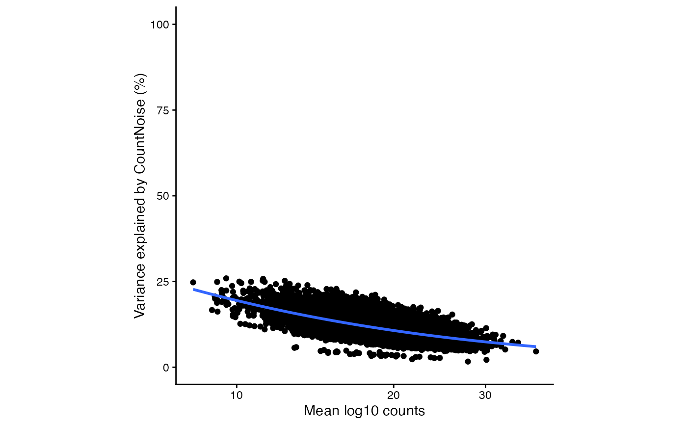
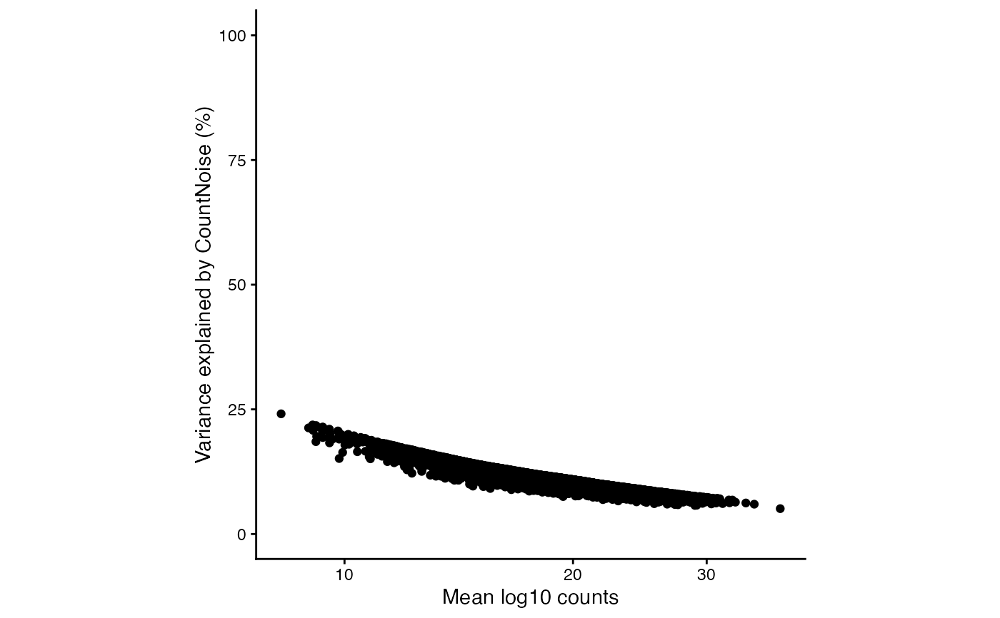

Plot trend of variance fractions for a specified component versus count magnitude for each gene and cell cluster
Usage
plotTrendVP(x, vp, component, ...)
# S4 method for class 'DESeqDataSet,data.frame'
plotTrendVP(x, vp, component, ...)
# S4 method for class 'DGELRT,data.frame'
plotTrendVP(x, vp, component, ...)Examples
# Simulate counts
set.seed(1)
countMatrix <- matrix(rnbinom(n=100000, mu=20, size=3), ncol=10)
rownames(countMatrix) <- paste0("gene_", seq(nrow(countMatrix)))
colnames(countMatrix) <- paste0("sample_", seq(ncol(countMatrix)))
condition <- factor(rep(1:2, each=5))
# DESeq2 model #
library(DESeq2)
#> Loading required package: S4Vectors
#> Loading required package: stats4
#> Loading required package: BiocGenerics
#> Loading required package: generics
#>
#> Attaching package: ‘generics’
#> The following object is masked from ‘package:lme4’:
#>
#> refit
#> The following objects are masked from ‘package:base’:
#>
#> as.difftime, as.factor, as.ordered, intersect, is.element, setdiff,
#> setequal, union
#>
#> Attaching package: ‘BiocGenerics’
#> The following object is masked from ‘package:limma’:
#>
#> plotMA
#> The following objects are masked from ‘package:stats’:
#>
#> IQR, mad, sd, var, xtabs
#> The following objects are masked from ‘package:base’:
#>
#> Filter, Find, Map, Position, Reduce, anyDuplicated, aperm, append,
#> as.data.frame, basename, cbind, colnames, dirname, do.call,
#> duplicated, eval, evalq, get, grep, grepl, is.unsorted, lapply,
#> mapply, match, mget, order, paste, pmax, pmax.int, pmin, pmin.int,
#> rank, rbind, rownames, sapply, saveRDS, table, tapply, unique,
#> unsplit, which.max, which.min
#>
#> Attaching package: ‘S4Vectors’
#> The following objects are masked from ‘package:Matrix’:
#>
#> expand, unname
#> The following object is masked from ‘package:utils’:
#>
#> findMatches
#> The following objects are masked from ‘package:base’:
#>
#> I, expand.grid, unname
#> Loading required package: IRanges
#> Loading required package: GenomicRanges
#> Loading required package: Seqinfo
#> Loading required package: SummarizedExperiment
#> Loading required package: MatrixGenerics
#> Loading required package: matrixStats
#>
#> Attaching package: ‘MatrixGenerics’
#> The following objects are masked from ‘package:matrixStats’:
#>
#> colAlls, colAnyNAs, colAnys, colAvgsPerRowSet, colCollapse,
#> colCounts, colCummaxs, colCummins, colCumprods, colCumsums,
#> colDiffs, colIQRDiffs, colIQRs, colLogSumExps, colMadDiffs,
#> colMads, colMaxs, colMeans2, colMedians, colMins, colOrderStats,
#> colProds, colQuantiles, colRanges, colRanks, colSdDiffs, colSds,
#> colSums2, colTabulates, colVarDiffs, colVars, colWeightedMads,
#> colWeightedMeans, colWeightedMedians, colWeightedSds,
#> colWeightedVars, rowAlls, rowAnyNAs, rowAnys, rowAvgsPerColSet,
#> rowCollapse, rowCounts, rowCummaxs, rowCummins, rowCumprods,
#> rowCumsums, rowDiffs, rowIQRDiffs, rowIQRs, rowLogSumExps,
#> rowMadDiffs, rowMads, rowMaxs, rowMeans2, rowMedians, rowMins,
#> rowOrderStats, rowProds, rowQuantiles, rowRanges, rowRanks,
#> rowSdDiffs, rowSds, rowSums2, rowTabulates, rowVarDiffs, rowVars,
#> rowWeightedMads, rowWeightedMeans, rowWeightedMedians,
#> rowWeightedSds, rowWeightedVars
#> Loading required package: Biobase
#> Welcome to Bioconductor
#>
#> Vignettes contain introductory material; view with
#> 'browseVignettes()'. To cite Bioconductor, see
#> 'citation("Biobase")', and for packages 'citation("pkgname")'.
#>
#> Attaching package: ‘Biobase’
#> The following object is masked from ‘package:MatrixGenerics’:
#>
#> rowMedians
#> The following objects are masked from ‘package:matrixStats’:
#>
#> anyMissing, rowMedians
dds <- DESeqDataSetFromMatrix(countMatrix,
DataFrame(condition),
~ condition)
#> converting counts to integer mode
dds <- DESeq(dds)
#> estimating size factors
#> estimating dispersions
#> gene-wise dispersion estimates
#> mean-dispersion relationship
#> final dispersion estimates
#> fitting model and testing
res <- results(dds)
# Variance partition analysis
vp1 <- varpart(dds)
# Plot count noise vs expression magnitude
plotTrendVP( dds, vp1, "CountNoise" )

# edgeR model #
library(edgeR)
design <- model.matrix( ~ condition, data.frame(condition))
d <- DGEList(countMatrix)
d <- normLibSizes(d)
d <- estimateDisp(d, design)
fit <- glmQLFit(d, design)
fit <- glmQLFTest(fit)
vp2 <- varpart(fit, dispObj = d, formula = ~ cond)
# Plot count noise vs expression magnitude
plotTrendVP( dds, vp2, "CountNoise" )
#> Warning: Failed to fit group -1.
#> Caused by error in `nls()`:
#> ! step factor 0.000488281 reduced below 'minFactor' of 0.000976562
